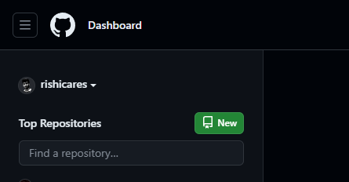
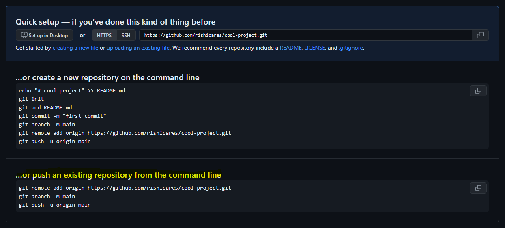

To push an existing project to GitHub, you must first create a GitHub repository. To do this, simply click the green “Create repository” button in GitHub’s online console and provide a repository name.
For example, we name repository cool-project here.
If you’ve already committed the code on your local device, you can just copy the command line code from highlighted code-snipped and run in the command line.
Or, Obtain the repo’s GitHub URL from quick setup box. Copy this value for use in a future step.
If the existing project (in your device) does not already use Git, issue a git init command in the root folder. After the repository is initialized, add all of the project files to the Git index and perform a commit:
git add .
git commit -m "Add existing project files prior to the push to GitHub."To let your existing project synchronize with GitHub, issue a git remote add command to configure a reference from you local Git installation to the repository on GitHub. Note that the last segment of the git remote add command is your project’s GitHub URL:
git remote add origin https://github.com/rishicares/cool-project.gitOnce you’ve added the remote reference, you are ready to push your existing project to GitHub. Simply issue a git push command with the name of the current branch along with the -u and -f switches.
Note that older Git repositories create a master branch by default, while newer ones use main. Amend the git push command accordingly:
git push -u -f origin masterThe -u switch makes the remote GitHub repo the default for your existing project. The -f switch forces Git to overwrite any files that already exist on GitHub with your existing project’s files.
To verify that the existing project was pushed to GitHub successfully, log into the GitHub website and browse the repository. All of the files from your existing project should be visible on GitHub.
You can find this file as HTML in the Electronics Club repository. Feel free to fork it and make improvements.
Try to fork others’ repos, clone this repo to your device, make changes, and explore more!
If you encounter any issues, feel free to ask me via LinkedIn - linkedin.com/in/rishikeshgautam
If you'd like to connect, here are my profiles: LinkedIn, GitHub